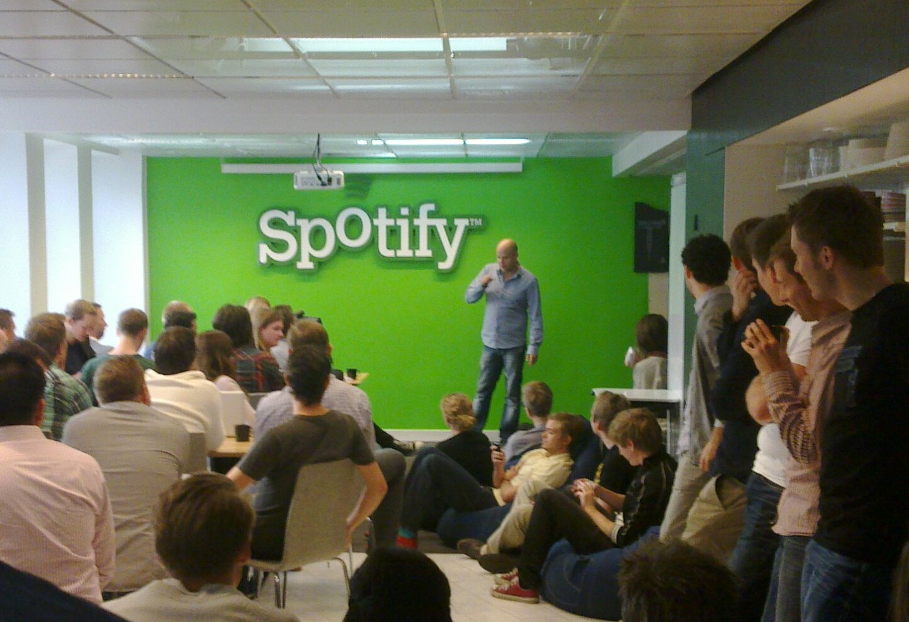

Spotify
«Spotify»(рус. Спотифа́й) — стриминговый сервис, позволяющий легально прослушивать музыкальные композиции, аудиокниги и подкасты, не скачивая их на устройство. Доступен в виде веб-сайта, приложений для всех операционных систем, смартфонов, смарт-устройств и медиа-систем автомобилей. На сервис приходится более 36 % мирового аудиостриминга, он доступен в большинстве стран Северной и Южной Америки, практически во всех странах Европы, некоторых странах Азии и Африки, в Австралии и Океании.
15 июля 2020 года сервис официально запущен в России. 25 марта 2022 года сервис полностью приостановил свою деятельность в России. Более 70% прослушиваний музыки сервиса происходит через плейлисты, а не по поисковому запросу или со страницы артиста. С 2006 года и до конца 2018 года компания являлась убыточной, она существовала на средства инвесторов и выплачивала больше авторских отчислений, чем зарабатывала. По словам Бена Сисарио из The New York Times, примерно 13 000 из семи миллионов артистов на Spotify заработали 50 000 долларов или более в 2020 году.
«Спотифай» присутствует на множестве современных устройств, на операционных системах «Windows», «macOS», «Linux», «Android» и «iOS», а функция «Spotify Connect» (рус. Соединение по Спотифай) позволяет пользователям задействовать ряд устройств одновременно. Клиент «Спотифай» для ПК позволяет импортировать музыку из «iTunes», с возможностью синхронизации с мобильными устройствами. Любая композиция, альбом или плей-лист могут быть встроены в код страницы сайта или блога. По состоянию на сентябрь 2019 года, в сервисе активно более 248 млн аккаунтов, 113 млн из которых пользуются платными услугами. «Спотифай» содержит более 50 млн песен, каждый день загружается несколько десятков тысяч новых файлов. Поиск осуществляется по песням, артистам, альбомам, плей-листам и лейблам. Приблизительно 20 % каталога никто никогда не воспроизводил. «Happy Birthday to You» имеет 1400 версий. Для защиты использованы технические средства защиты авторских прав.
